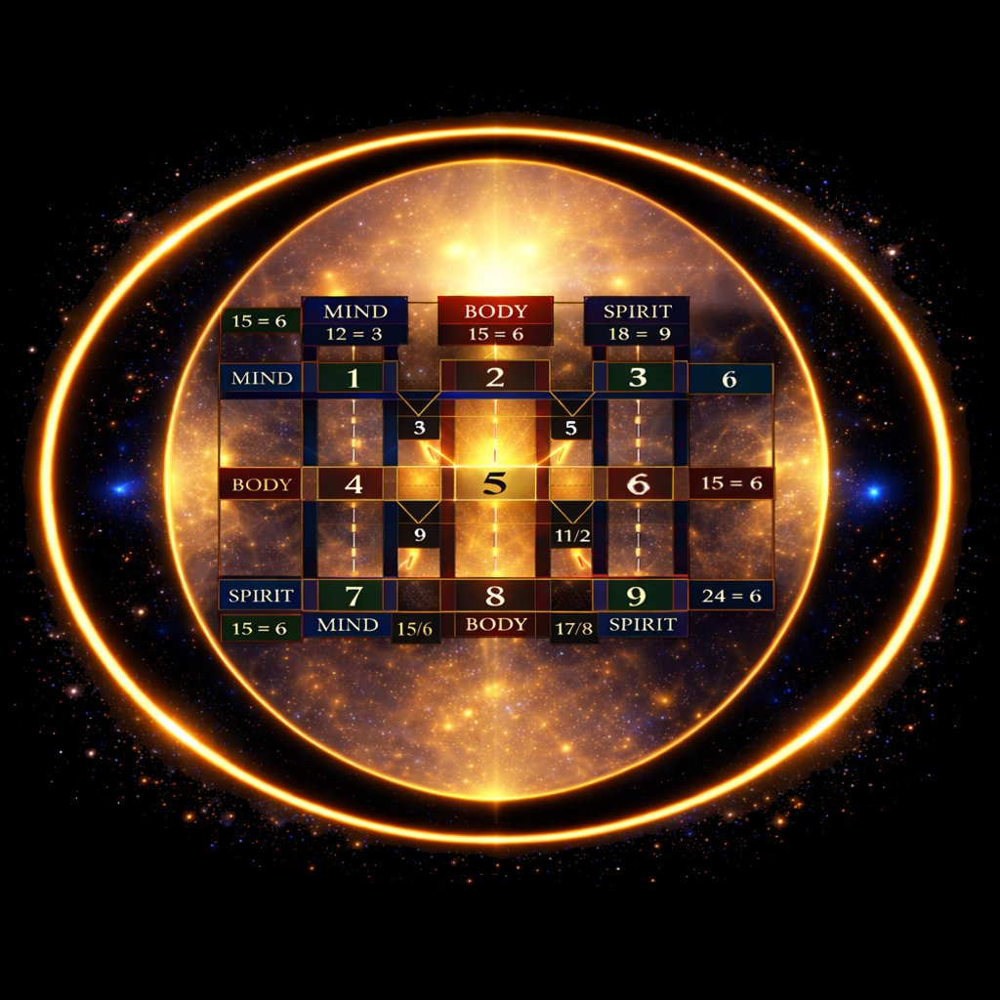

Few number sequences carry more cultural charge than 666. Centuries of religious tradition have loaded it with meanings that range from ominous to apocalyptic. People avoid it, fear it, and treat its appearance as a warning.
The Codex — the 3×3 consciousness matrix at the heart of Simulation Source Code — tells a completely different story. Not a reassuring one that simply inverts the fear. A structurally precise one. 666 is not a warning. It is a map. Specifically, it is the map of what holds the entire system of human development together.
First: What Six Actually Is
In the evolution of energy through the nine frequencies, Six arrives after the exploration and freedom of Five. It is the frequency of integration — the point at which the individual, having explored the world and come into their own expression, finds love, responsibility, and community. Six is parental guidance, care, the creation of harmonious environments, the maturation into stewardship of something beyond oneself.
Positively expressed: nurturing, compassionate, reliable, creative, community-minded.
Shadow expressed: controlling, over-responsible, self-neglecting, perfectionistic, resentful.
The underlying energy of Six is the alignment of understanding with behaviour. Knowing something is not enough. Six demands that you live what you know. This is why it appears where it does in the Codex — and why it appears so often.
The Structure of the Codex
The Codex is a 3×3 grid of the nine digits, arranged as they appear on a standard numpad. Each position in the grid sits at the intersection of a row (Mind, Body, or Spirit) and a column (Witness, Actor, or Sage). The relationships between positions reveal patterns that are not coincidental — they are structural laws of how energy moves through consciousness.
One of those patterns: almost every row of the Codex, when its positions are summed, reduces to 6.

Look at the horizontal rows: 1+2+3 = 6. 4+5+6 = 15, and 1+5 = 6. 7+8+9 = 24, and 2+4 = 6. Every plane of consciousness — Mind, Body, Spirit — reduces to Six. The single exception is a specific diagonal that produces a 9, marking the Spirit dimension's completion point.
This is where 666 comes from in the context of the Codex. The frame — the structural container of the entire system — is Six. Three rows, each reducing to Six. The number that frames everything is 6, 6, 6.
The frame of 6 is not decorative. It is structural. It is the container that makes transformation possible.
Why Six Frames Everything
The Codex is not arbitrary. If Six is the frequency of integration — of understanding becoming behaviour, of knowledge becoming lived responsibility — then its structural dominance in the matrix is a statement about what this dimension of experience is fundamentally about.
Pure perception (1) without responsible action (6) remains fantasy. Embodied experience (5) without integration (6) dissipates into random motion. Even the completion of a cycle (9) requires that you first live what you know (6). The system cannot hold together without the frame of integration. Six is not the most dramatic frequency. It is the most necessary one.
Consider the qualities of Six again through this lens: nurturing, creating harmony, balancing responsibilities, being reliable, showing compassion, building community. These are not optional virtues for a life well lived. They are, according to the architecture of the Codex, the dominant lesson of human embodied experience. The simulation is, at its structural core, a school for Six.
The Three Flavours of Six
The Codex rows do not all produce the same Six. They produce 6, 15/6, and 24/6 — three distinct compound expressions of the same root frequency, each with its own flavour.
6 — integration in its most direct form. The energy of care and responsibility expressed without complication.
15/6 — the most common in the Codex. The 15 contains the energy of initiation (1) through experience (5) toward integration (6). Wilfully embodying the energies of Six. Going out (1) and experiencing (5) being human (6). This is the practical sequence of how Six is actually learned — not through understanding it conceptually, but through living it.
24/6 — structure (2 connecting with 4) refined into care. The organised, disciplined path toward integration. Building the container (4) through relationship (2) that ultimately produces stewardship (6).
Each is Six. Each arrives there differently. The Codex is showing you that there is more than one road to integration — but integration is where all roads lead.
What This Means for 666 in Your Life
When 666 appears as a sequence in your experience — on a clock, a receipt, a number plate — the reading is not sinister. In the context of your current moment, it is the structural law of the Codex presenting itself: integration is required here.
Ask yourself where in your current experience understanding and behaviour are out of alignment. Where do you know something but are not yet living it? Where is care being expressed as control rather than genuine stewardship? Where has responsibility become burden rather than genuine choice?
These are the questions 666 is raising. Not as a warning of something approaching from outside. As a signal of something ready to be integrated within.
The Deeper Inversion
There is something worth sitting with here. The number sequence that Western culture has most thoroughly associated with evil, corruption, and the forces of darkness is, in the architecture of the consciousness matrix, the frame of integration — the very quality that prevents the system from collapsing.
Without Six, nothing holds. The simulation itself, at the level of its structural design, runs on the frequency it has been most thoroughly taught to fear.
This is either a coincidence or the most elegant misdirection in cultural history. The simulation, as noted throughout this framework, has a tendency to invert things. The thing most feared often turns out to be the thing most needed.
666 is not the mark of the beast. It is the mark of the work.